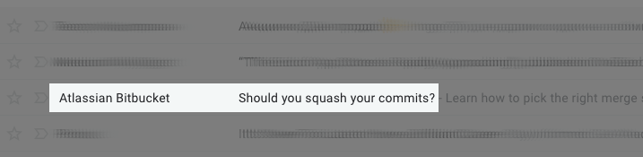

2019-05-22 13:40
I've got an email from Atlassian today:

It leads to this BitBucket blog post.
Apparantly Git users use squash to liberate their history from noise. Mercurial does this kind of "noise removal" by default: one simply merges development branch into default one, and default one gets a complete diff into, as a single commit.